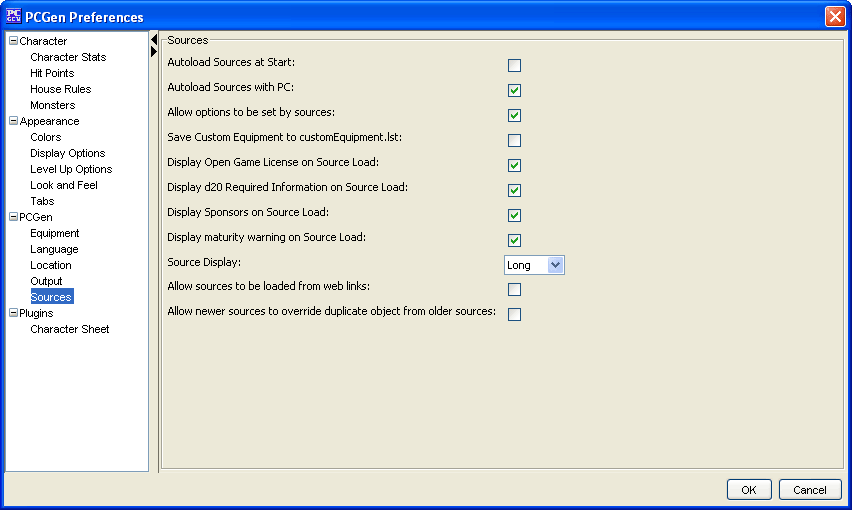

The Sources menu option allows the user to define whether to auto load the sources with the PC and or when PCGen starts up. It also has options that allows sources to set particular options in the preferences area, allow the saving of custom equipment to a specific file and options that control the display of licenses.
The Autoload Sources at start option determines whether the last used sources will be started with PCGen .
The Autoload Sources with PC option determines whether the sources required for a created PC will be automatically loaded if their file is opened.
The Allow options to be set by sources option determines whether PCGen will ignore settings lines embedded in source (.pcc) files.
The Save Custom Equipment to customEquipment.lst option determines if custom items created for PCs will be saved for use by other characters .
The Display Open Game License on Source Load option determines whether PCGen will display the OGL when sources are opened.
The Display d20 Required Information on Source Load option determines whether PCGen will display the d20 information when sources are opened.
The Source Display option determines whether the full company and product name, initials or web page details will be displayed with source information.
The Allow sources to be loaded from web links option determines if .pcc files can load source data from web page links or not.
The Use Advanced Source Selection option will disable the new source loading dialog box, allowing the more advanced user to use the older Source Loading method.